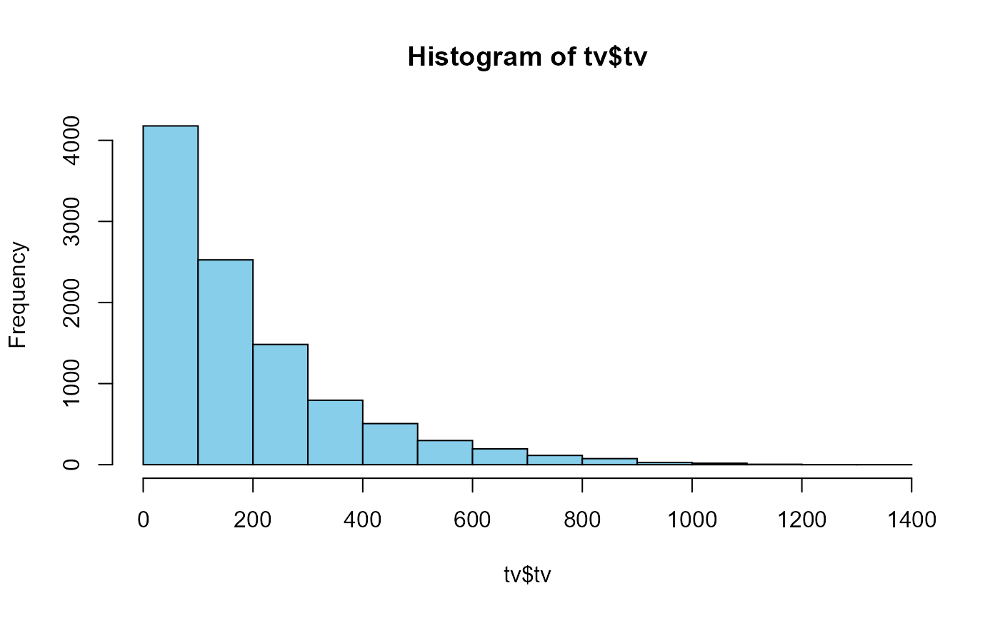

This is a data set detailing TV usage on days surveyed as determined by the 2017 American Time Use Survey. The data set includes demographic information, as well as details regarding employment and family makeup, where applicable. Information on days surveyed, as well as whether the day is a holiday, is also included.
tvA data frame with 10,223 rows and 21 variables. The variables are as follows:
ID of respondent
ATUS final weight
Age of the youngest child in the household that is less than 18 years old (if applicable). Range: 1-17; if no child in household: NA
Age of respondent
Sex of respondent
Status of employment of the respondent. Direct transcription from original codebook: 1 = Employed, at work, 2 = Employed, absent, 3 = Unemployed, on layoff, 4 = Unemployed, looking, 5 = Not in the labor force.
The response to question, “in the last seven days did you have more than one job?” Returns NA if no job.
Does the respondent have a full time job or a part time job? (NA if no job)
Are you enrolled in high school, college, or university? (NA if not currently enrolled)
If yes to educ, are you enrolled in high school or upper schooling? (NA if not currently enrolled)
Presence of the respondent's spouse or unmarried partner in the household with 1 = Spouse present 2 = Unmarried partner present 3 = No spouse/unmarried partner present
Answer to the question, “does your partner have a job?” (NA if not applicable)
Weekly earnings at the respondent’s main job, two decimals implied
Number of children under 18 in the household
Part time/full time job status of partner, if applicable (NA if partner unemployed or no partner)
Total hours usually worked per week (-4: Hours vary)
Day of the week about which the respondent was interviewed (Monday thorugh Friday)
Notes if the respondent was interviewed on a holiday
Total time spent providing elder care that day by the respondent, in minutes
Total time spent during diary day providing secondary childcare for household children younger than 13, in minutes
Minutes spent watching TV
For more information regarding the key visit https://www.bls.gov/tus/atusintcodebk17.pdf. This data is retrieved from the American Time Use Survey, made available through the Bureau of Labor Statistics https://www.bls.gov/tus/datafiles_2017.htm.
summary(tv)
#> id weight youngest_child age
#> Min. :2.017e+13 Min. : 686312 Min. : 0.000 Min. :15.00
#> 1st Qu.:2.017e+13 1st Qu.: 3924828 1st Qu.: 3.000 1st Qu.:35.00
#> Median :2.017e+13 Median : 6690424 Median : 7.000 Median :50.00
#> Mean :2.017e+13 Mean : 9254579 Mean : 7.497 Mean :49.88
#> 3rd Qu.:2.017e+13 3rd Qu.: 11426800 3rd Qu.:12.000 3rd Qu.:64.00
#> Max. :2.017e+13 Max. :209010030 Max. :17.000 Max. :85.00
#> NA's :6131
#> sex job m_job f_job educ
#> Female:5581 Min. :1.000 No :5624 Full:4926 No :4298
#> Male :4642 1st Qu.:1.000 Yes : 580 Part:1278 Yes : 760
#> Median :1.000 NA's:4019 NA's:4019 NA's:5165
#> Mean :2.565
#> 3rd Qu.:5.000
#> Max. :5.000
#>
#> educ2 partner pr_job salary
#> College/Uni: 445 Min. :1.000 No :1780 Min. : 0
#> High School: 315 1st Qu.:1.000 Yes :3595 1st Qu.: 48000
#> NA's :9463 Median :2.000 NA's:4848 Median : 85000
#> Mean :1.988 Mean :103028
#> 3rd Qu.:3.000 3rd Qu.:138461
#> Max. :3.000 Max. :288461
#> NA's :4752
#> children pr_job_f job_hours day
#> Min. : 0.0000 Full :2903 Min. : -4.00 Friday :1011
#> 1st Qu.: 0.0000 Hours Vary: 196 1st Qu.: 32.00 Monday :1059
#> Median : 0.0000 Part : 496 Median : 40.00 Saturday :2477
#> Mean : 0.7455 NA's :6628 Mean : 36.63 Sunday :2667
#> 3rd Qu.: 1.0000 3rd Qu.: 45.00 Thursday :1003
#> Max. :11.0000 Max. :105.00 Tuesday :1042
#> NA's :4019 Wednesday: 964
#> holiday elder_care child_time tv
#> Min. :0.00000 Min. : 0.0 Min. : 0.0 Min. : 0
#> 1st Qu.:0.00000 1st Qu.: 30.0 1st Qu.: 0.0 1st Qu.: 35
#> Median :0.00000 Median : 95.0 Median : 0.0 Median : 120
#> Mean :0.01311 Mean : 192.8 Mean : 108.5 Mean : 182
#> 3rd Qu.:0.00000 3rd Qu.: 230.0 3rd Qu.: 45.0 3rd Qu.: 265
#> Max. :1.00000 Max. :1290.0 Max. :1250.0 Max. :1400
#> NA's :9734
hist(tv$tv, col="skyblue")
